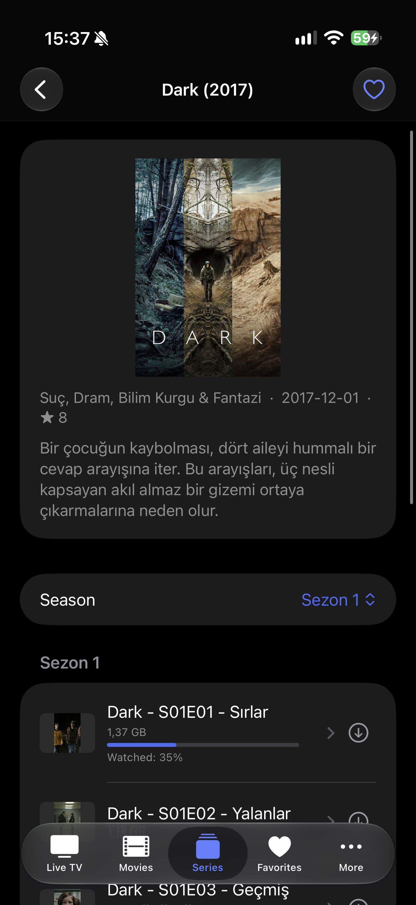

Añadir
Añade un acceso Xtream Codes o un enlace M3U / M3U8
Inicia sesión con Apple para sincronizar favoritos e historial entre tus dispositivos

Xtream, guía EPG, sin ads
Reproductor M3U
Un reproductor sencillo para tu propia lista M3U o Xtream Codes.
TV en vivo, películas y series. Sin anuncios.
Favoritos, descargas y reanudar.
Easytv Play es un reproductor multimedia. No ofrece canales, suscripciones ni contenido. Añade solo una fuente que tengas derecho a ver. La EPG, los subtítulos y la calidad de la emisión dependen de tu proveedor.
Sin anuncios. Sin rastreo de terceros.

TU LISTA
Easytv Play no ofrece canales, suscripciones ni contenido. Añade solo una fuente que tengas derecho a usar.
Favoritos, descargas, guía EPG, reanudación, subtítulos, bloqueo con Face ID e inicio de sesión con Apple.
Añadir
Inicia sesión con Apple para sincronizar favoritos e historial entre tus dispositivos
TV en vivo
Busca en tu biblioteca y guarda favoritos
Guía

Reanudar

Descargas

No ofrece canales, suscripciones ni contenido. Añade solo una fuente que tengas derecho a ver. La EPG, los subtítulos y la calidad de la emisión dependen de tu proveedor.
Sin anuncios. Sin rastreo de terceros.
Pantallas


Licencias
Esta app usa los siguientes componentes de código abierto.
© VideoLAN y los autores de VLCKit.
Bajo la Licencia Pública General Reducida de GNU, versión 2.1 o posterior (LGPL-2.1-or-later). El framework se enlaza de forma dinámica y la persona usuaria puede sustituirlo de acuerdo con la LGPL.
Easytv Play es un reproductor IPTV para tus propias listas M3U o Xtream.
Reproduce TV en vivo, películas y series de esa lista, con favoritos, descargas y reanudar. Sin anuncios. Sin rastreo de terceros.
No ofrece canales, suscripciones ni contenido. Añade solo una fuente que tengas derecho a ver. La EPG, los subtítulos y la calidad de la emisión dependen de tu proveedor.
Easytv Play es un reproductor multimedia. No ofrece canales, suscripciones ni contenido. Añade solo una fuente que tengas derecho a ver. La EPG, los subtítulos y la calidad de la emisión dependen de tu proveedor.
Añade un acceso Xtream Codes o un enlace M3U / M3U8
Sin anuncios. Sin rastreo de terceros.
Inicia sesión con Apple para sincronizar favoritos e historial entre tus dispositivos. El detalle está en la política de privacidad.
Soporte de Easytv Play. Escribe a hello@soneraltin.com.